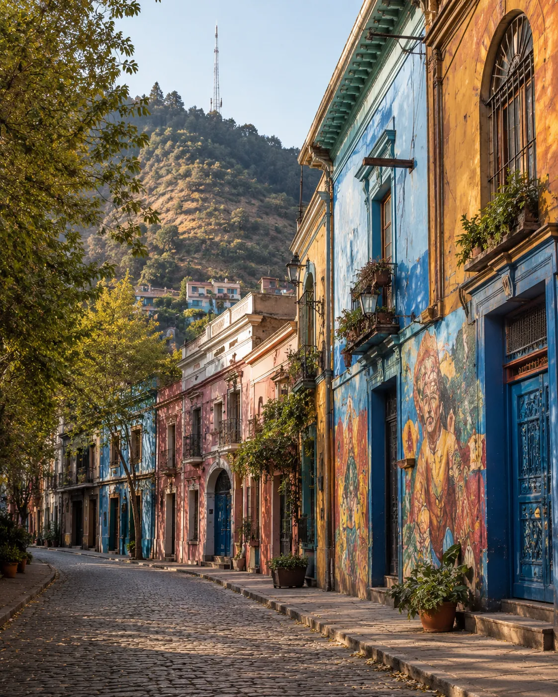

Bellavista
Vida nocturna + Cerro San CristóbalBuena opción si quieres salir caminando por la noche y alojarte cerca de una de las zonas más bohemias de la ciudad. La oferta hotelera es menor y el movimiento nocturno no es para todos.
Ver hoteles recomendados →